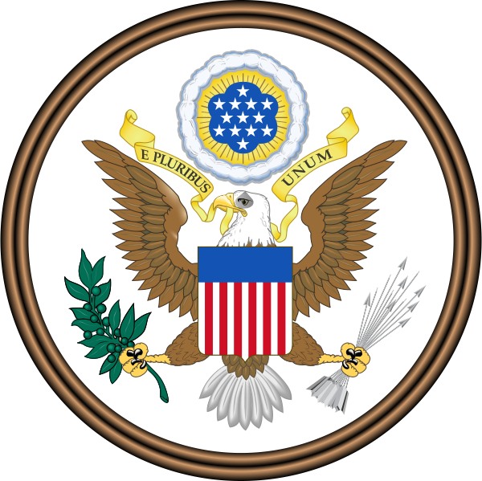

《排华法案》是议员Horace F. Page提出，美国总统切斯特·艾伦·阿瑟于1882年5月6日签署的一项法案，成为《美国法典》的一部分。美国两党人士均参与了对该法案的推动。此法案为1880年对《天津条约续增条约》的修订，允许美国暂停华人移民。国会根据修订的条约，很快就制定了这项法案。
这项法案将所有华人劳工拒于美国之外长达十年。其1884年修正案更限缩了先前入境的移民离开和进入美国的规定，同时阐明，无论这些华人的国籍为何，该法皆适用。1892年，该法案由《吉尔里法案》（或称《基瑞法案》）延长十年，到1902年便取消了时限。法案被1943年通过的《马格努森法案》废除，后者允许每年105名华人的入境移民限额，然而大规模的华人移民并没有随之到来，直至《1965年入境移民与国籍服务法案》的通过。该法案是对大量华人因中国的内部动荡和有机会得到铁路建设工作而迁入美国西部所作出的反应，当时华工们将横跨美洲的铁路较预定通车日期早了7年之多就提前完工，被当地人称为“像机器一样(machine-like)”，不论酷暑与严冬都会完成繁重工作，虽然说偶尔也有薪资争执，但不会像其他劳工那样组织暴动，相对地调涨要求也仍很低，而且与欧裔先祖的劳工追求美国化不同，华工重视保留自己的传统文化，随后这些移民转移到美国各地从业时，结果就是价格崩盘、扰动了市场经济，造成当地人大量失业，并且在当时种族歧视的氛围下，成为首个被拒之门外的民族。它是在美国通过的第一部针对特定族群的移民法。
虽然该法案很久之前就被废止，但是长期以来它却一直是《美国法典》的一部分。即便是今天，虽然它所有的内容都早已被废除，但是《美国法典》第8篇第7章题名为“排除华人”（Exclusion of Chinese）。它是第8篇（外国人和国籍）的15章里唯一一个完全针对一个特定国籍或族群的章节。
第一个重要的华人移民北美潮始于1848-1855年的加利福尼亚淘金潮，接着又以大型劳工项目带来大批华人，包括建设第一条横贯大陆的铁路。在淘金热的早期阶段，当表层黄金充足时，华人即使不受欢迎，也能够被白人容忍。然而，随着黄金越来越难找到，竞争越来越激烈，对华人和其他外国人的敌意也在增加。在被州立法者和其他矿工（外国矿工税）一起强行赶出采矿业后，移民华人开始在城市（主要是旧金山）的飞地定居，从事低报酬的劳动，如餐馆和洗衣店的工作。随着19世纪70年代美国内战后经济的衰退，劳工领袖丹尼斯·科尔尼和他的工人党团体以及加州州长约翰·比格勒将反华仇恨政治化，他们都指责华裔的“苦力”导致工资水平低下。尽管许多立法尝试很快被州最高法院推翻，但加州和全国仍在通过更多的反华律法。
19世纪50年代初，由于华裔移民工人提供了必要的税收，填补了加利福尼亚州的政府赤字，因此加利福尼亚州政府并不支持排斥华人劳工移民。时任清朝皇帝对防止劳工、罪犯、病人移民持支持态度，他担心这些人移民到美国会导致中国失去劳动力。但到了1850年代末，经济状况有所改善，随后，在州一级立法排华的尝试获得成功。1858年，加利福尼亚州立法机关通过了一项法案，规定所有“中国或蒙古”人进入该州都是非法的；但是，1862年该州最高法院推翻了这条法案，未发表解释意见。
到1860年，华人已经是加利福尼亚州最大的移民团体了。华裔移民工人提供廉价劳动力，不占用任何政府基础设施（学校、医院等），因为中国移民人口中，健康的成年人男性占据了绝大多数。随着时间的推移，越来越多的华裔移民来到加利福尼亚州，在洛杉矶等地开始多发暴力事件。宾夕法尼亚州议会和国会提到，宾夕法尼亚州海狸瀑布餐具公司（Beaver Falls Cuttery Company）因为所有工作被200多名华人男性取代而爆发了罢工。“在某种程度上，它促成了《排华法案》的最终通过。”曾经，在加州，华人男性占所有挣工资工人人口的近四分之一，到1878年，国会感到有必要在立法中禁止来自中国的移民，而这项法案后来被拉瑟福德·伯查德·海斯总统否决。1873年8月27日《旧金山纪事报》文章的标题是“中国入侵！他们来了，90万人，强大的种族”，这篇文章被《大西洋》追溯为2019年反移民“入侵”言论的根源之一。
然而，到了1879年，加利福尼亚州通过了一部新宪法法案，明确授权州政府决定哪些人可以在该州居住，并禁止华人受雇于公司和州、县或市政府。尽管关于加州的反华情绪是否推动了联邦政府（加州论）作出决定，或者对华歧视主义是否仅仅是该国固有的问题存在争议，但到1882年，联邦政府还是被说服通过了《排华法案》，在10年内禁止从中国移民。当《排华法案》最终在1882年被通过时，加州也通过了各项法律，更加深入地进行了对华人的差别待遇——但这些法律随后被宣告为违宪。
该法案通过后，大多数华裔工人面临一个两难的境地：是该独自留在美国，还是返回原乡与家人团聚。全国的（尤其是加州本地的）报纸开始从各方面质疑和谴责华人，比如白人失业问题。尽管法律通过后，人们对中国人的普遍厌恶依然存在，但值得注意的是，一些资本家和企业家基于经济因素而反对排华，因为他们想要继续享受较低工资支出。
《排华法案》是在美国历史上针对自由移民所作出的最重大的限制之一。该法案通过监禁和驱逐的惩戒方式禁止“被矿井雇佣的有技能或无技能的华人劳工们”在10年之内进入美国。仅仅因为种族，许多华人被残酷地控制住了。少数想要移民的非劳工华人不得不从中国政府那里获得保证以证明他们有资格移民，但证明这一点显然太过困难。
沃普认为《排华法案》被认为是美国排斥华人法律的起始点，原因在于用词不当。她建议开展有关种族、性别和美国国籍的交流从而令双方了解对于这样一种历史性倾向（包括1875年的Page法案）的控制并促使女性华人的移民。
法案同样影响到了那些已经在美国定居的亚洲人。任何离开美国的华人必须获取日后再次入境的证明，并且《排华法案》通过剥夺华人的美国国籍使得他们永久性地成了外国人。该法案通过之后，美国的男性华人与他们的妻子团聚或者在新家组建家庭的机会非常的小。1884年的修正案收紧了为之前的移民的离开和返回所作的准备，并细化了法案的适用范围：华人种族，无论其国籍是哪里。 1888年的《斯科特法案》延伸了《排华法案》的内容，禁止华人在离开美国后再次入境。1892年的《吉尔里法案》将《排华法案》的有效性延长了10年。1902年，该法案再次被无限期延长。当1902年该法案延长时效时，它命令“每一个华人居民注册并取得居留证明。如果没有证明就会被驱逐出境。”
从1882年至1905年之间，约有10,000名华人通过对人身保护权的请愿方式将否决移民的决定上诉到联邦法院。在大多数情况下，法院都作出了有利于请愿者的判决。除了一些掺杂偏见和疏忽的案例导致这些请愿被一项于1894年由国会通过、并在Lem Moon Sing与美国政府的诉讼期间于1895年由最高法院赞成的一项法令驳回。在1905年的Ju Toy与美国政府的诉讼期间，美国最高法院重审的结果是，港口监察员和商务部部长有决定谁才能被认可（入境美国或成为美国公民）的最终权力。因此，尽管事实证明地方法院了解到Ju Toy是一个美国公民，但他的请愿仍旧被驳回了。最高法院坚持认为，在港口拒绝入境者不需要通过正当程序，并且从法律上讲与在陆地上拒绝入境者的行为具有同等意义。这条法令在中国引发了一场短暂的、针对对美国商品的联合抵制。
一个叫做乔治·福瑞斯比·霍尔的反蓄奴主义者、反帝国主义者和共和党参议员对《排华法案》持批评态度。他将该法案描述成“简直就是人种歧视的合法化”。
对于种族的忧虑催生了此类法案。但在此期间，其他种族的移民都没有受到限制。另一方面，许多人强烈支持《排华法案》，包括一个叫做“劳工骑士团”的商业/劳工联盟。这个联盟认为企业家们会利用华人劳工继续维持低廉的薪金。在工会和左翼团体当中，“世界工人”组织是仅有的一个例外。世界工人在《排华法案》通过之初至1905年都公开对此表示反对。
《排华法案》以及随之而来的一系列限制在1882年冻结了所有的华人社团。有限制的华人移民仍在继续，直到1943年《排华法案》被废止。此外， 1906年旧金山大地震摧毁了市政厅和档案室之后，许多被称作“契约儿子”（paper sons，即，冒充他人儿子的身份前往美国的男性华人）的移民声称他们与许多现存的华裔美国公民有着亲属关系。这些人的“契约儿子”身份的真伪已经无法证实。因此从1910年到1940年，旧金山湾的天使岛移民站（即现在的加州天使岛州立公园）, 处理了约17.5万华人， 其中56,113名记录在案的华人移民或者等待遣送回国的华人里的入境申请，其中有30%以上的华人被遣返回了中国。
《排华法案》导致了第一波大规模的商业性人口走私浪潮，之后这样的行为又扩散到了其他国家和种族团体当中。
后来，1924年的《移民法案》更加严格地限制了移民，排斥了所有阶层的华人移民，并且将限制扩展到了其他亚洲的种族团体。华人移民被迫与外界隔离，并且构建一个他们能够自给自足的社会团体（中国城，或唐人街），直到一系列限制在20世纪中期被放宽。
此外，《排华法案》并未解决这样一个白人面临着的问题：事实上，华人很快就迅速且急切地被在社会中扮演着性质与华人相似的角色的日本人所取代。与华人不同，一些日本人甚至能够通过经商或种植、贩卖农作物来提高自己的社会等级。不过后来，1924年专门针对日本人的《排亚法案》彻底杜绝了亚洲移民。
1885年在怀俄明州的石泉煤矿，150名白人矿工公然闯入唐人街开枪，杀害28名华人，震惊全国，警方随即逮捕16名嫌疑犯。当地工团劳工骑士团扬言要驱逐华人，在1886年押解华人到达码头后，西雅图警方赶赴现场制止，法院发出人身保护令并派民团随身保护。隔日，当民团护送华人到唐人街时被一群暴徒攻击，民团开枪打死两人，西雅图的华盛顿州政府宣布戒严，将华人全数运走。因此，即便在整个排华历史中，美国政府经常动用警察、军队保护华人免受暴力攻击。 纪录片《排华法案》描绘了其后可怕的暴力浪潮（包括大规模私刑），乃至1882年后在美国西部约300个城镇发生的种族清洗。
自1876年（清光绪二年）起清政府曾不断对美国迫害华侨提出抗议，然美国政府一直推脱责任，或干脆不予置理。
1884年（清光绪十年），清政府与美国签定新的条约，10年内禁止华工赴美。
1891年（清光绪十七年），清政府因为美国参议员亨利·W·布莱尔在《排华法案》谈判期间发表了有关中国的侮辱性言论而拒绝接受其出任公使访问中国。
1904年（清光绪三十年）4月27日，美国国会通过将所有排华法案无限期延长的议案，激起中国人民极大愤慨，于1905年爆发了抵制美货运动，迫使美国政府下令放宽教师、学生、商人和旅游者的入境限制，但并未废除该法案。
1943年，《排华法案》被《马格努森法案》废止。后者允许已经居住在美国的华人归化美籍，并令他们停止因为被驱逐出境的威胁而躲藏。该法案也给出了每年105名华人移民的限额。大量的华人移民并未涌现，直到1965年的《移民和国籍法案》被通过。尽管《排华法案》已经于1943年被废止，但1948年之前，加利福尼亚州禁止华人与白人通婚的法律仍未废除。在1967年以前，其它的州也有类似法律，直到最高法院在洛枫诉弗吉尼亚州（Loving v. Virginia）的诉讼期间一致同意地作出判决：反对种族通婚的法律是违反宪法的。而1879年加州宪法禁止政府与公司雇用华人的条款，到1952年才被废除。
甚至在今天，尽管《排华法案》的重要部分早已经被废止，但《美国法典》第8号的第7章仍旧以“排华”字样开头。在法典第8号的15个章节中，第7章是惟一一个完全聚焦于某个特定国籍或种族团体的章节。
2009年6月23日，加州众议院通过正式决议，为曾经通过针对华人的歧视性法律道歉。
2012年6月18日，美国国会通过正式决议，为曾经针对华人的歧视性法律道歉，但无任何赔偿。
更多详情请访问：美国排华法案